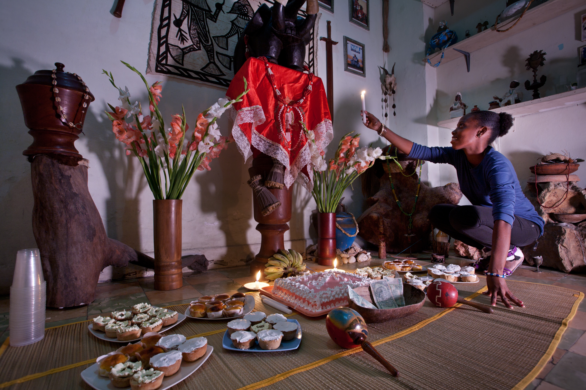
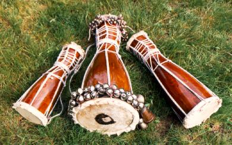

Religião • Cuba • Diáspora africana • História cultural
Santería — Regla de Ocha
Tradição afro-cubana formada pela preservação e transformação de heranças religiosas iorubás no contexto da diáspora africana.
Também chamada de Regla de Ocha ou Regla Lucumí, a Santería desenvolveu-se em Cuba a partir de tradições religiosas trazidas por africanos escravizados, sobretudo de origem iorubá, e reorganizadas no ambiente colonial e pós-colonial cubano.12
Regla de Ocha em 1 minuto
- Origem principal
- Cuba
- Matrizes históricas
- Tradições iorubás da África Ocidental e contexto religioso cubano
- Outros nomes
- Regla de Ocha, Regla Lucumí, Lucumí
- Elementos centrais
- Orishas, ancestralidade, iniciação, adivinhação, música e ritual
- Transmissão
- Predominantemente oral, prática e iniciática
- Organização
- Casas, linhagens e parentesco religioso
- Fundador
- Não existe fundador único
- Diáspora
- Cuba, Estados Unidos e redes transnacionais
O que é a Regla de Ocha?
A Regla de Ocha é uma religião afro-cubana centrada em relações rituais com os orishas, ancestrais, comunidade e especialistas religiosos. Fontes históricas e museológicas descrevem sua formação como um processo de continuidade e transformação, e não como simples reprodução intacta da religião praticada na África Ocidental.3
Não possui fundador único
A tradição foi formada por comunidades, casas e linhagens ao longo do tempo, sem profeta central ou autoridade universal.
Não é apenas “santos + deuses africanos”
Correspondências católicas fazem parte da história de muitas casas, mas não explicam sozinhas cosmologia, iniciação, música, adivinhação e parentesco ritual.
Não é Vodou, Palo Monte ou Candomblé
São tradições afro-diaspóricas distintas, com histórias, linguagens rituais, instituições e cosmologias próprias.
Uma religião formada na diáspora
- África Ocidental
Antes do século XIX
Sociedades iorubás já mantinham tradições religiosas relacionadas a orishas, ancestralidade, divinação, ritual e comunidade.
- 1790–1865
Tráfico atlântico para Cuba
Grande número de africanos iorubás foi levado à força para Cuba; no contexto cubano, muitos passaram a ser designados Lucumí.1
- Século XIX
Cuba colonial
Práticas e instituições foram reconstruídas sob escravidão, catolicismo colonial, circulação urbana e novas relações entre grupos africanos e crioulos.4
- Cabildos
Sociabilidade e preservação
Cabildos de nación e outras associações afro-cubanas funcionaram como espaços de sociabilidade, ajuda mútua e elaboração cultural; sua relação exata com formas posteriores da Regla de Ocha é tema de pesquisa histórica, não uma linha evolutiva simples.5
- Século XX
Casas e redes religiosas
A tradição consolida redes de sacerdotes, iniciados, parentesco ritual e práticas urbanas, ao mesmo tempo que sofre preconceito e vigilância.
- Diáspora contemporânea
Transnacionalização
Migrações cubanas e redes religiosas ampliam a presença da Regla de Ocha nos Estados Unidos, América Latina e outros contextos.6
Como apresentar essa visão de mundo sem transformá-la numa pirâmide rígida?
Uma introdução didática pode mostrar relações entre divindade suprema, orishas, ancestrais, pessoas e mundo material. Mas casas e linhagens podem formular essas relações de maneiras distintas.
Nota: o diagrama organiza conceitos para leitura introdutória; não representa uma teologia universal válida da mesma forma em todas as casas.
Orishas: relações, narrativas e diferenças entre linhagens
Os orishas ocupam posição fundamental na Regla de Ocha. Suas histórias, atributos, cores, cantos e relações rituais podem variar conforme casa, linhagem e corpus transmitido.7
Eleguá
Caminhos, comunicação, mediação e abertura de possibilidades.
Obatalá
Criação, equilíbrio, autoridade e clareza em diferentes narrativas.
Yemayá
Águas e dimensões maternas, com variações rituais e narrativas.
Ochún
Rios, fertilidade, beleza, prosperidade e relações.
Shangó
Trovão, poder, liderança e justiça em múltiplos contextos.
Conhecimento que se aprende participando
Oralidade
Rezas, cantos, narrativas e fórmulas rituais preservam conhecimento e memória.
Iniciação
Parte do conhecimento pertence a processos iniciáticos e não é destinada à exposição pública irrestrita.
Linhagem
Relações entre padrinhos, madrinhas, iniciados e casas organizam parentesco religioso e autoridade.
Prática
Participação, observação e repetição ritual são formas de aprendizagem tão importantes quanto textos impressos.
Pesquisas etnográficas sobre comunidades santeras em Cuba enfatizam justamente como linguagem, desacordo, autoridade e participação produzem comunidade religiosa sem uma instituição central única.8
Quando religião também se torna música, memória e identidade
Tambores batá, canto litúrgico, dança e linguagem ritual participam da própria estrutura de muitas cerimônias. O Smithsonian preserva gravações de 1957 com cantos para diferentes orishas acompanhados por batá e outros instrumentos.9
- tambores batá;
- canto e louvação aos orishas;
- vocabulário ritual Lucumí;
- dança e gestualidade;
- memória musical afro-cubana.
Discussões contemporâneas mostram ainda que normas de gênero relacionadas ao batá variaram e vêm sendo contestadas em diferentes redes transnacionais.10

Uma religião formada sob condições de violência
A formação da Regla de Ocha não pode ser separada do tráfico transatlântico, da escravidão e da reorganização forçada da vida africana em Cuba. A religião resultante não foi uma “sobrevivência congelada”: foi uma criação afro-cubana marcada simultaneamente por continuidade, transformação e inovação.11
Preservação cultural
Linguagem ritual, cantos, ritmos e narrativas mantiveram referências africanas em novos contextos.
Comunidade
Casas e parentesco religioso criaram redes de pertencimento e apoio.
Inovação
Novas formas religiosas foram produzidas em Cuba em vez de uma simples cópia do passado africano.
Quando religião virou “superstição”
Como praticantes e estudos religiosos descrevem
- religião;
- ancestralidade;
- comunidade;
- orishas;
- ritual;
- proteção e cuidado;
- identidade.
Como foi frequentemente enquadrada externamente
- “feitiçaria”;
- “superstição”;
- “primitivismo”;
- “bruxaria”;
- “perigo social”.
Esses enquadramentos estiveram historicamente ligados à racialização de religiões afrodescendentes. Estudos e órgãos de liberdade religiosa continuam registrando discriminação contra praticantes em Cuba e na diáspora.12
Hialeah: liberdade religiosa em julgamento
A Church of the Lukumi Babalu Aye planejou instalar-se em Hialeah, Flórida. A cidade adotou normas dirigidas a práticas de sacrifício animal associadas à igreja.
A Suprema Corte dos Estados Unidos decidiu Church of the Lukumi Babalu Aye v. City of Hialeah.
A Corte considerou que as normas não eram neutras nem de aplicação geral e violavam a proteção constitucional ao livre exercício religioso.13
O caso mostra que estudar Santería também significa estudar a relação entre minoria religiosa, preconceito, legislação e direitos civis.
Controvérsias sem “lado sombrio”
Sacrifício animal
Perspectiva religiosa: prática ritual presente em determinados contextos da tradição.
Debate contemporâneo: envolve liberdade religiosa, normas sanitárias e bem-estar animal.
Contexto jurídico: o caso Hialeah demonstrou que o Estado não pode criar proibições direcionadas especificamente a uma religião.
Comercialização e transnacionalização
Consultas, iniciações e viagens religiosas podem envolver pagamentos e redes internacionais. Isso alimenta debates internos sobre autoridade, autenticidade e exploração financeira.
A existência de fraude ou abuso em casos particulares não autoriza classificar toda a tradição como fraudulenta.
Sincretismo
Correspondências entre orishas e santos católicos são historicamente relevantes, mas estudos contemporâneos questionam modelos excessivamente simples de “mistura”. Praticantes podem tratar universos religiosos como relacionados, paralelos ou distintos.
O que a cultura popular simplifica?
| Afirmação | Avaliação |
|---|---|
| “Santería é magia negra.” | Falso/reducionista. É uma tradição religiosa afro-cubana complexa. |
| “É a mesma coisa que Vodou.” | Não. São religiões distintas. |
| “Foi criada por uma pessoa.” | Não. Formou-se historicamente por comunidades e linhagens. |
| “Veio da África sem mudanças.” | Não. A tradição foi reorganizada e inovada em Cuba. |
| “É apenas santos católicos + deuses africanos.” | Simplificação. Correspondências católicas são apenas uma dimensão de um sistema religioso mais amplo. |
| “Todos seguem as mesmas regras.” | Não. Casas e linhagens podem divergir em prática e interpretação. |
O que sabemos × o que pertence ao campo da crença
Historicamente documentado
- formação afro-cubana;
- forte matriz iorubá/Lucumí;
- casas e linhagens;
- oralidade e linguagem ritual;
- música e dança;
- adivinhação e possessão ritual;
- preconceito religioso;
- expansão transnacional.
Tradição e crença religiosa
- existência objetiva dos orishas;
- intervenção sobrenatural de entidades;
- capacidade literal de prever eventos futuros;
- eficácia sobrenatural de oferendas;
- interpretação espiritual da possessão.
A antropologia pode documentar rituais, relatos e efeitos sociais. Isso não equivale a comprovar cientificamente uma explicação sobrenatural para essas experiências.
Para continuar estudando
David H. Brown
Santería Enthroned
História, inovação, ritual e cultura material.Ver referênciaKristina Wirtz
Ritual, Discourse, and Community in Cuban Santería
Comunidade, linguagem, desacordo e transmissão.Ver referênciaGeorge Brandon
Santeria from Africa to the New World
Transformação histórica entre África, Cuba e Estados Unidos.Ver referênciaMercedes Cros Sandoval
Worldview, the Orichas, and Santería
Cosmologia e circulação transnacional.Ver referênciaJoseph M. Murphy
Santería: An African Religion in America
Desenvolvimento da tradição nos Estados Unidos.Ver referênciaLydia Cabrera
El Monte
Fonte histórica influente; deve ser lida criticamente e em contexto.Por que estudar a Regla de Ocha?
Continuidade não significa imobilidade
A história da Regla de Ocha mostra que tradições culturais não precisam permanecer idênticas para sobreviver. Africanos e seus descendentes reconstruíram práticas religiosas em Cuba sob escravidão, deslocamento e discriminação. O resultado foi uma tradição afro-cubana própria, marcada por continuidade, transformação, resistência e inovação.
Fontes e metodologia
As referências abaixo combinam instituições culturais, documentação jurídica, sínteses acadêmicas e livros especializados. Fontes religiosas são identificadas como tradição; decisões judiciais sustentam apenas afirmações jurídicas.
1. Smithsonian Folklife Festival — “Santeria” (1989)
Fonte institucional sobre africanos iorubás/Lucumí em Cuba, orishas e formação dinâmica da Regla de Ocha.
Abrir fonte2. Smithsonian National Museum of American History — Glossary: Santería
Definição institucional da tradição como religião afro-cubana e uso formal de Regla de Ocha.
Abrir fonte3. American Museum of Natural History — Afro-Cuban Religion
Exposição museológica sobre religião afro-cubana, orishas, música e práticas em Cuba.
Abrir fonte4. Cambridge History of Religions in Latin America — Caribbean Religious History
Contextualiza a importância das populações Lucumí na Cuba oitocentista e a formação da Santería.
Abrir fonte5. Andrew Apter — “Yoruba Ethnogenesis from Within”
Discussão historiográfica que revisita teorias sobre cabildos, ancestralidade e etnogênese Lucumí/Santería.
Abrir fonte6. Mercedes Cros Sandoval — Worldview, the Orichas, and Santería
Livro acadêmico sobre cosmologia, desenvolvimento cubano e circulação transnacional.
Abrir fonte7. Library of Congress — American Folklife Center Collections: Cuba
Acervo de gravações Lucumí, Arará e Kongo-Angolanas em Cuba, útil para música, liturgia e diversidade afro-cubana.
Abrir fonte8. Kristina Wirtz — Ritual, Discourse, and Community in Cuban Santería
Etnografia sobre linguagem, comunidade, autoridade e transmissão religiosa em Santiago de Cuba.
Abrir fonte9. Smithsonian Libraries — Havana & Matanzas, ca. 1957
Registro de cantos e ritmos tradicionais para orishas com batá e outros instrumentos.
Abrir fonte10. Smithsonian Folklife — The Rise of Female Batá Drummers
Discussão contemporânea sobre gênero, batá e transformação de normas rituais em Cuba e na diáspora.
Abrir fonte11. David H. Brown — Santería Enthroned
História, antropologia, cultura material e inovação religiosa afro-cubana.
Abrir fonte12. USCIRF — Factsheet: The Santería Tradition in Cuba (2021)
Documento sobre a tradição e questões contemporâneas de liberdade religiosa em Cuba.
Abrir fonte13. U.S. Courts — Church of Lukumi-Babalu Aye v. Hialeah
Resumo institucional do caso 508 U.S. 520 (1993), sobre neutralidade religiosa e livre exercício.
Abrir fonte14. David H. Brown — Santería Enthroned (University of Chicago Press, 2003)
Referência essencial sobre arte, ritual, inovação e instituições afro-cubanas.
Abrir registro15. George Brandon e Joseph M. Murphy — leituras introdutórias
Santeria from Africa to the New World (Brandon) e Santería: An African Religion in America (Murphy) acompanham a formação histórica e a expansão norte-americana.
Brandon · Murphy16. Wikimedia Commons — registros visuais
Havana - Cuba - 2939.jpg, Jorge Royan, 2011, CC BY-SA 3.0, documenta uma celebração de Santería em Havana; Bata drums.jpg, foto de Kenneth Ritchards, domínio público, documenta o conjunto Okónkolo, Iyá e Itótele. As imagens foram redimensionadas e convertidas localmente; a fotografia de Havana também originou a imagem Open Graph.
Imagem de Havana · Tambores batá